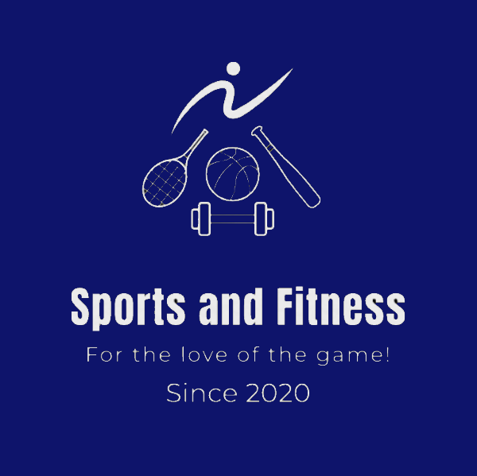
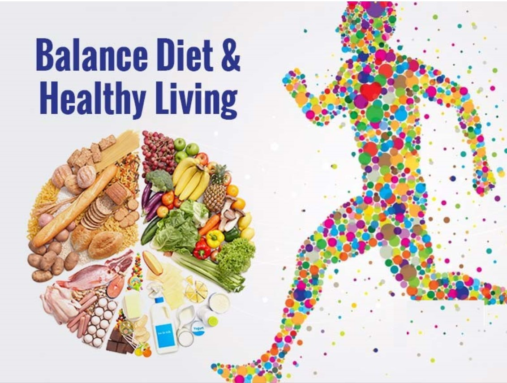

Sports and Fitness

CI: Performing different types of sports develops our skills and improves our physical fitness.
LOI 1: Types of sports
LOI 2: What impact does sport have on people and the world
LOI 3: What role does Fitness and Diet play in sports?
Types of Sports
How sports can change the world
Nelson Mandela
-Sport has the power to change the world. It has the power to inspire. It has the power to bring people together. Sports speaks to you in a language you understand. Sport can create hope. It is more powerful than the governments barriers!!-
These are UN's Sustainable goals. UN has 17 of of them where as 4 of those directly impacted by sports.

Sports and Fitness can bring good health and well-being. When you play sports and do exercise, you build your cardiovascular and muscular endarance and muscular strength. Your body gets fit, you feel energised and feel good. Sports also gives an opportunity to bring people together and develop social skills, this improves the social well-being.
Sport plays a big role and helps students learn important skills to function socially. It has both physical and mental benefits to those who are playing or learning sports daily. Quality education can be brought through sports and fitness, this is because sport enhances brain cognition and increases thinking abilities. This helps children to do better in studies and also develop good behaviours like teamwork, adaptability, time management etc.


Sports promotes gender equality. All sports give equal opportunities to men and women who play. Major sporting tournaments like the Olympics, Commonwealth games and even Paralympics have events for both men and women. Paralympics gives opportunities to differently-abled sportsperson too. This brings about gender equality through sports.
Sports also provides opportunities for economic growth and gives people chance to find work. For example, if a country hosts the Olympics, that country will imporve infrastructure to host the events and in turn give work to its people to get things like stadiums, roads, hotels ready to host people.When people come to watch the Olympic games, people pay money for watching the games in a stadium, for stay in hotels or for eating out. This way the country benefits from economic growth.

Sports and Fitness can bring good health and well-being. When you play sports and do exercise, you build your cardiovascular and muscular endarance and muscular strength. Your body gets fit, you feel energised and feel good. Sports also gives an opportunity to bring people together and develop social skills, this improves the social well-being.
Sport plays a big role and helps students learn important skills to function socially. It has both physical and mental benefits to those who are playing or learning sports daily. Quality education can be brought through sports and fitness, this is because sport enhances brain cognition and increases thinking abilities. This helps children to do better in studies and also develop good behaviours like teamwork, adaptability, time management etc.
Sports promotes gender equality. All sports give equal opportunities to men and women who play. Major sporting tournaments like the Olympics, Commonwealth games and even Paralympics have events for both men and women. Paralympics gives opportunities to differently-abled sportsperson too. This brings about gender equality through sports.
Sports also provides opportunities for economic growth and gives people chance to find work. For example, if a country hosts the Olympics, that country will imporve infrastructure to host the events and in turn give work to its people to get things like stadiums, roads, hotels ready to host people.When people come to watch the Olympic games, people pay money for watching the games in a stadium, for stay in hotels or for eating out. This way the country benefits from economic growth.
What role does fitness and diet play in sports

Good Nutrition is key to
- Overall health & athletic performance
- Improved recovery
- Preventing early fatigue & potential injury
- Achieving the best results